Project 7 — Vela Pulsar: X-ray Imaging with Chandra
Data reduction · Sizes of the nebular structures · Energy-resolved imaging · Three-colour analysis
Target
Vela pulsar (PSR B0833−45) and its pulsar wind nebula (PWN); distance d = 287 (+19/−17) pc (VLBI parallax, Dodson et al. 2003)
Data
Chandra ACIS-S: ObsID 128 (30 Apr 2000, 10.6 ks; the imaging observation of the reference paper) and the deep ObsID 12075 (4 Sep 2010, 41.0 ks) as an independent, higher-statistics check
Software
CIAO 4.18 (conda), CALDB 4.12.4 (files for each ObsID fetched with download_obsid_caldb), Python (numpy/scipy/astropy/matplotlib)
Central question. How does the morphology of the Vela PWN change with X-ray photon energy, and what does this tell us about the physical processes around the pulsar?
Answer in brief. The nebula is a tilted equatorial torus (outer ring radius ≈ 21″ = 0.030 pc, inclination ≈ 55–67°, symmetry axis at PA ≈ 305–309°) with an inner arc, a jet/counter-jet pair along the axis, a faint ~90″-long outer jet and a diffuse halo ≈ 2′ across. In the hard band (3–8 keV) the nebula is more compact: its half-light radius is 20.7″ against 22.9″ in the soft band (difference 2.26 ± 0.09″; the same in both epochs). The jets are the hardest features (net photon index Γ ≈ 1.0–1.1), the torus has the colour of its surroundings (Γ ≈ 1.4), and the diffuse emission softens steadily with distance, from Γ ≈ 1.32 at 10–15″ to Γ ≈ 1.62 at 30–40″. Fresh particles accelerated at the termination shock flow out along the equator and the axis and lose their highest energies by synchrotron radiation as they go (B ≈ 2–3×10−4 G); the front/back contrast of the torus requires Doppler boosting by a flow with β ≥ 0.38–0.56.
The project brief leaves the ObsID open; we used ObsID 128, the timed-exposure ACIS-S image of the pulsar and nebula that Pavlov et al. (2001) used for orientation, as the main dataset. Because it is short (10.6 ks), every measurement was repeated on ObsID 12075, the longest single ACIS observation of the Vela PWN (2010; four times the counts). The two observations differ by 120° in roll angle, so instrumental features (readout streak, PSF artefact) rotate between them while real structure does not, and they are 10 years apart, so the variable features of the nebula can be compared.
ObsID
Date
Instrument / mode
Frame time
128
2000-04-30
ACIS-S3, FAINT, TE, ½ subarray (512 rows)
1.54 s
12075
2010-09-04
ACIS-S (S3 aim), FAINT, TE, full frame
3.24 s
ObsID
Roll
Exposure (clean)
Counts 0.5–8 keVa
128
260.3°
10.58 ks (no bins removed)
130 760
12075
140.1°
41.02 ks (41.78 ks before light-curve cleaning)
404 129
Table 1. Observations analysed. a Inside a 4.2′ × 4.2′ box centred on the pulsar.
1.2 Reduction steps
Step
Tool(s)
What was done / result
Calibration
download_obsid_caldb
Only the CALDB 4.12.4 files each observation needs (~0.5 GB instead of the 2.3 GB full CALDB).
Reprocess
chandra_repro
New level-2 event files with current gain, CTI, bad-pixel and afterglow corrections and EDSER sub-pixel event positions.
Flares
dmextract, deflare (lc_clean)
Light curve of an annulus 2.0–2.7′ from the pulsar in 259-s bins (Fig. 2). No background flares in either observation; for ObsID 12075 the ±20% clipping removed 0.77 ks (a few low-rate bins and partial bins at the ends).
Peak 0.21 (128) and 0.20 (12075) counts per frame per 3×3-pixel island: ≈ 5–10% pile-up, confined to the pulsar's core (r < 1″).
Readout streak
acisreadcorr (tested)
Expected streak ≈ 1.3% of the pulsar counts (~40 counts) spread along a whole column; acisreadcorr without a streak spectrum deleted real nebular photons along the strip, so it was not applied.
PSF artefact
make_psf_asymmetry_region
Known HRMA 'hook' 0.6–1.0″ from the pulsar on its NW side (ObsID 128): a soft excess there is instrumental.
Images
fluximage, dmcopy
Counts, exposure maps and exposure-corrected images in soft 0.5–1.5, medium 1.5–3, hard 3–8 and broad 0.5–8 keV at 0.492″ pixels, and counts images of the inner ±64″ at 0.246″.
Responses
asphist, mkarf, mkacisrmf
ARF and RMF at the pulsar position for converting band ratios to photon indices and fluxes (Sherpa / specextract not installed).
Table 2. Processing chain. All scripts are in the scripts/ folder (Appendix A).
1.3 Structures identified
Figures 1a and 1b show the clean 0.5–8 keV images. In both epochs we identify: (i) the pulsar, a bright point source; (ii) the outer arc, ~15″ NW of the pulsar on the axis and curving back on both sides — the near (front) half of an equatorial torus; (iii) the fainter inner arc, ~5–8″ NW, best seen in the deep data; (iv) a jet along the symmetry axis to the NW and a brighter counter-jet to the SE; (v) a diffuse PWN ≈ 2′ across, brighter on the W/NW and extended to the S; and (vi) in ObsID 12075 a faint, curved outer jet leaving the nebula to the NW (in ObsID 128 only a compact blob of it, 78″ from the pulsar, is detected). The arcs and jets are the same in both epochs to within a few arcseconds, while the outer jet has changed completely — as expected for its known 'fire-hose' variability (Pavlov et al. 2003).
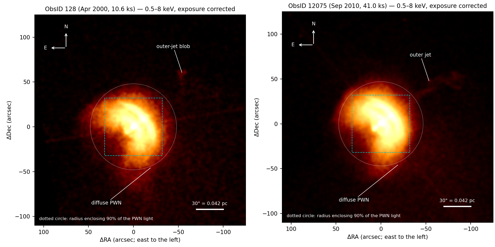
Figure 1a. Clean 0.5–8 keV images of the whole nebula, exposure corrected and smoothed with a 1.2″ Gaussian; the cyan box is the area of Fig. 1b. North up, east left; offsets are from the pulsar.
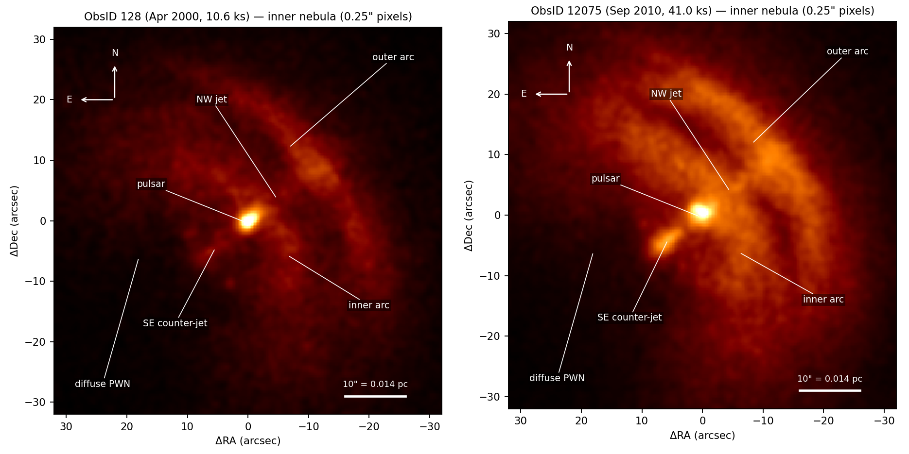
Figure 1b. The inner nebula (0.246″ pixels, 0.5″ smoothing) with the structures identified in the text.
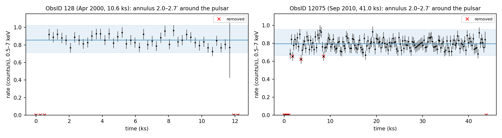
Figure 2. Background light curves used for flare screening (0.5–7 keV, 259-s bins). Shaded band: ±20% around the clipped mean used by deflare; crosses: removed bins. Neither observation shows a background flare; the zero-rate bins are partial bins at the ends.
Task B
2. Sizes of the Structures (Task B)
2.1 Method
Arcs. The broad-band image was unwrapped into radius versus position angle (PA, north through east) and the brightness ridge of each arc was located at every PA. Fitting a free ellipse to one side of a ring is badly constrained, so we fitted the physical model of a circular ring seen at inclination i: an ellipse with semi-axes a (perpendicular to the symmetry axis) and b = a cos i (along it), whose centre may sit a distance d from the pulsar along the axis. Errors are from 300 bootstrap resamplings of the ridge points. Jets. Brightness profiles along the axis were compared with profiles at the same distance 25° off the axis; the jet length is the last distance where the jet is ≥ 20% brighter than its surroundings (the NW jet is cut where it merges with the outer arc). Widths are Gaussian FWHMs of the transverse profile with the PSF (0.73″, measured on the pulsar in ObsID 128) removed in quadrature. Whole nebula. After subtracting the mean level at 90–120″ we measured the radii enclosing 50% and 90% of the nebular light, and the equivalent ellipse of the region brighter than 4× (and 2×) that level. Physical sizes use l = dθ with d = 287 pc, so 1″ = 287 AU = 4.29×1015 cm = 0.00139 pc ≈ 1.66 light-days.
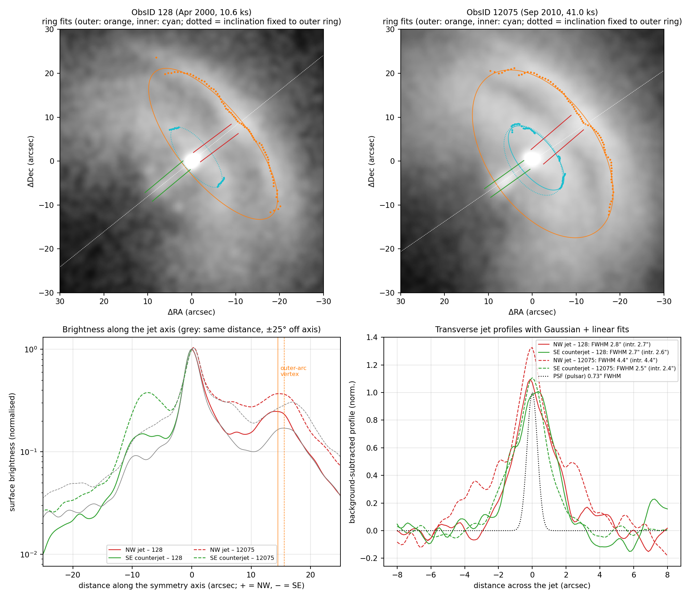
Figure 3. Measurements. Top: ridge points and fitted rings (orange = outer arc, cyan = inner arc; dotted cyan = inner ring with the outer ring's inclination imposed) and the jet strips. Bottom left: brightness along the symmetry axis (red/green) compared with the nebula at the same distance 25° off axis (grey). Bottom right: transverse jet profiles and the PSF.
Structure / quantity
ObsID 128 (″)
ObsID 12075 (″)
Notes
Outer arc (torus): ring radius a
21.1 ± 1.8
21.5 ± 0.4
semi-major axis of the projected ellipse
Outer arc: torus diameter 2a
42.1 ± 3.5
43.0 ± 0.9
Outer arc: semi-minor axis b
8.3 ± 2.2
12.6 ± 0.9
Outer arc: distance of arc vertex from pulsar
14.5
15.5
along the axis, NW
Outer arc: inclination i = arccos(b/a)
67 ± 4°
54 ± 2°
Ng & Romani: 63.6°
Symmetry-axis position angle
308.8 ± 0.6°
304.5 ± 0.5°
proper motion PA ≈ 301°
Inner arc: ring radius a
8.4 ± 0.1
8.8 ± 0.6
128: only the arc ends seen (fit with i fixed); 12075: i = 62 ± 9°
Inner arc: distance of arc vertex from pulsar
—
5.3
NW jet: length
12.2
13.5
until it meets the outer arc
NW jet: width (FWHM, PSF-corrected)
2.67 ± 0.07
4.35 ± 0.18
12075 broadened by inner-arc knots
SE counter-jet: length
12.8
12.5
SE counter-jet: width (FWHM, PSF-corrected)
2.59 ± 0.09
2.43 ± 0.05
Outer jet: path length
—
89.5
from r = 38″ to 102″ (0.141 pc); width ≈ 6″; 128: blob at r ≈ 78″
Bright PWN: half-light radius
23.0
23.0
Bright PWN: 90%-light radius
48.0
47.0
Bright PWN (> 4× outer level): semi-axes
62.3
64.3
× 51″ / 51″; i.e. ≈ 129″ × 102″ ≈ 2′ across
Structure / quantity
pcb
cmb
lt-daysb
Outer arc (torus): ring radius a
0.030
9.2×1016
36
Outer arc: torus diameter 2a
0.060
1.8×1017
71
Outer arc: semi-minor axis b
0.018
5.4×1016
21
Outer arc: distance of arc vertex from pulsar
0.022
6.7×1016
26
Inner arc: ring radius a
0.012
3.8×1016
15
Inner arc: distance of arc vertex from pulsar
0.007
2.3×1016
9
NW jet: length
0.019
5.8×1016
22
NW jet: width (FWHM, PSF-corrected)
0.006
1.9×1016
7
SE counter-jet: length
0.017
5.4×1016
21
SE counter-jet: width (FWHM, PSF-corrected)
0.003
1.0×1016
4
Outer jet: path length
0.124
3.8×1017
148
Bright PWN: half-light radius
0.032
9.9×1016
38
Bright PWN: 90%-light radius
0.065
2.0×1017
78
Bright PWN (> 4× outer level): semi-axes
0.089
2.8×1017
107
Table 3. Angular and physical sizes. b Physical values for the ObsID 12075 number (or ObsID 128 when it is the only one), at d = 287 pc; light-days = light-travel time across the length. Using d = 210 pc (Pavlov et al. 2001) would reduce all physical sizes by 27%; the ±18 pc parallax error adds ±6%.
2.2 Results and comparison with earlier work
The outer arc is described well by an inclined ring (rms scatter of the ridge about the model 0.6″ and 0.5″). Its radius, 21.1 ± 1.8″ (2000) and 21.5 ± 0.4″ (2010), i.e. 0.030 pc ≈ 6,109 AU, is the same in both epochs and agrees with the torus fits of Ng & Romani (2004, 2008), as do the axis direction (PA ≈ 305–309°, close to the proper-motion direction PA ≈ 301°) and the inclination. The inclination differs between our two fits (67 ± 4° vs 54 ± 2°): with only the front half of the ring visible, b and the centre offset d are partly degenerate and the brightness distribution along the arc changes between epochs, so we regard i ≈ 55–67° as the range allowed by our data (Ng & Romani: 63.6°). The inner arc has a radius ≈ 9″ (0.012 pc) and comes within ≈ 5″ of the pulsar; it is the closest feature to the wind termination shock. Both jets are ≈ 12–14″ (≈ 0.018 pc) long and ≈ 2.5″ (≈ 0.0035 pc) wide, i.e. resolved by Chandra. The bright nebula has a half-light radius of 23″ (0.032 pc) and is ≈ 2′ (0.17 pc) across, as in the schematic of our pre-project report; the outer jet reaches 102″ (0.14 pc) from the pulsar.
Task C
3. Energy-Resolved Imaging (Task C)
Figures 4 and 5 show the soft (0.5–1.5 keV), medium (1.5–3 keV) and hard (3–8 keV) images. To make the comparison quantitative we used (a) the half-light radius of the nebula in each band (outer level subtracted, exposure corrected, Poisson errors from 200 simulated images); (b) hardness ratios HR = (H − S)/(H + S) (and HR1 = (M − S)/(M + S), HR2 = (H − M)/(H + M)) in regions and annuli; and (c) conversion of the hardness ratios into the photon index Γ of an absorbed power law (nH = 3×1020 cm−2, Pavlov et al. 2001), folded through each observation's ARF and RMF. Step (c) removes the loss of soft-band sensitivity of ACIS between 2000 and 2010 (contamination of the optical-blocking filter): the raw hardness ratios of ObsID 12075 are systematically higher, but the photon indices of the two epochs agree (Table 5).
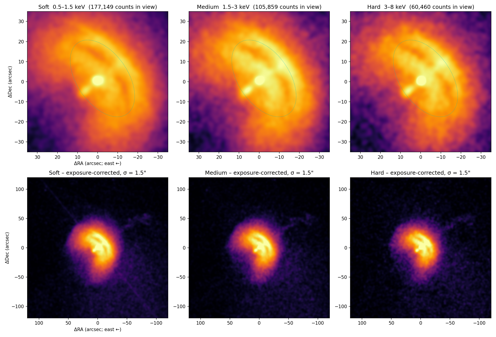
Figure 4. ObsID 12075 in the three bands. Top: inner ±35″ (counts, 1″ smoothing; dashed = fitted outer ring). Bottom: whole nebula, exposure corrected, 1.5″ smoothing. The same stretch is applied to each band relative to its own range.
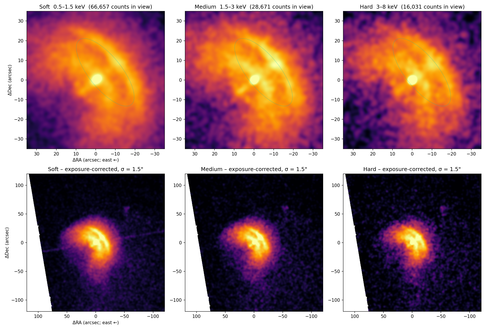
Figure 5. As Fig. 4 for ObsID 128. The faint E–W line in the soft wide image is the pulsar's readout streak (left uncorrected, Sect. 1.2).
3.1 How the morphology changes with energy
Soft 0.5–1.5 keV
Medium 1.5–3 keV
Hard 3–8 keV
Half-light radius, ObsID 128
22.57 ± 0.07″
21.55 ± 0.11″
20.46 ± 0.16″
Half-light radius, ObsID 12075
22.95 ± 0.05″
21.93 ± 0.05″
20.68 ± 0.07″
80%-light radius, ObsID 12075
35.8″
34.6″
33.3″
Appearance
Smooth, extended nebula; arcs visible but with low contrast; pulsar surrounded by a soft halo; extended southern emission
Arcs, jets and the region inside the torus show the highest contrast
Compact: inner nebula, arcs and counter-jet; outer halo faint
Table 4. Size and appearance of the nebula in the three bands. The hard nebula is smaller than the soft one by 2.11 ± 0.17″ (2000) and 2.26 ± 0.09″ (2010), i.e. by ≈ 10%, at > 12σ in each epoch.
In all three bands the same skeleton is present — torus, inner arc, jets — so the overall geometry does not depend on energy; what changes is the contrast and extent. The soft image is dominated by the smooth, extended nebula and by a halo around the pulsar; the medium band shows the arcs and jets most clearly (as predicted in our pre-project report); and the hard image is visibly more compact, with the emission concentrated inside and on the torus and along the jets. The nebula therefore shrinks with increasing photon energy.
Task D
4. Three-Colour Imaging and Spectral Map (Task D)
We built three-colour images with red = soft, green = medium and blue = hard, both with the standard CIAO recipe (aconvolve + dmimg2jpg, Fig. 6) and in Python with a colour-balanced scaling (Fig. 7): each band is divided by its mean brightness over the nebula (3″ < r < 45″) and one common stretch is applied, so that the average nebular spectrum appears white and colours show where the emission is relatively soft (red/yellow) or hard (blue). Figure 8 is the corresponding hardness-ratio map and Fig. 9 the photon index as a function of distance from the pulsar in four directions.
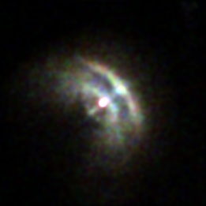
ObsID 128
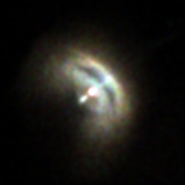
ObsID 12075
Figure 6. Standard CIAO three-colour images (aconvolve, σ = 2 pixels; dmimg2jpg with asinh scaling, each band scaled between its 1st and 99.8th percentile), ±64″ around the pulsar. Red = soft, green = medium, blue = hard.
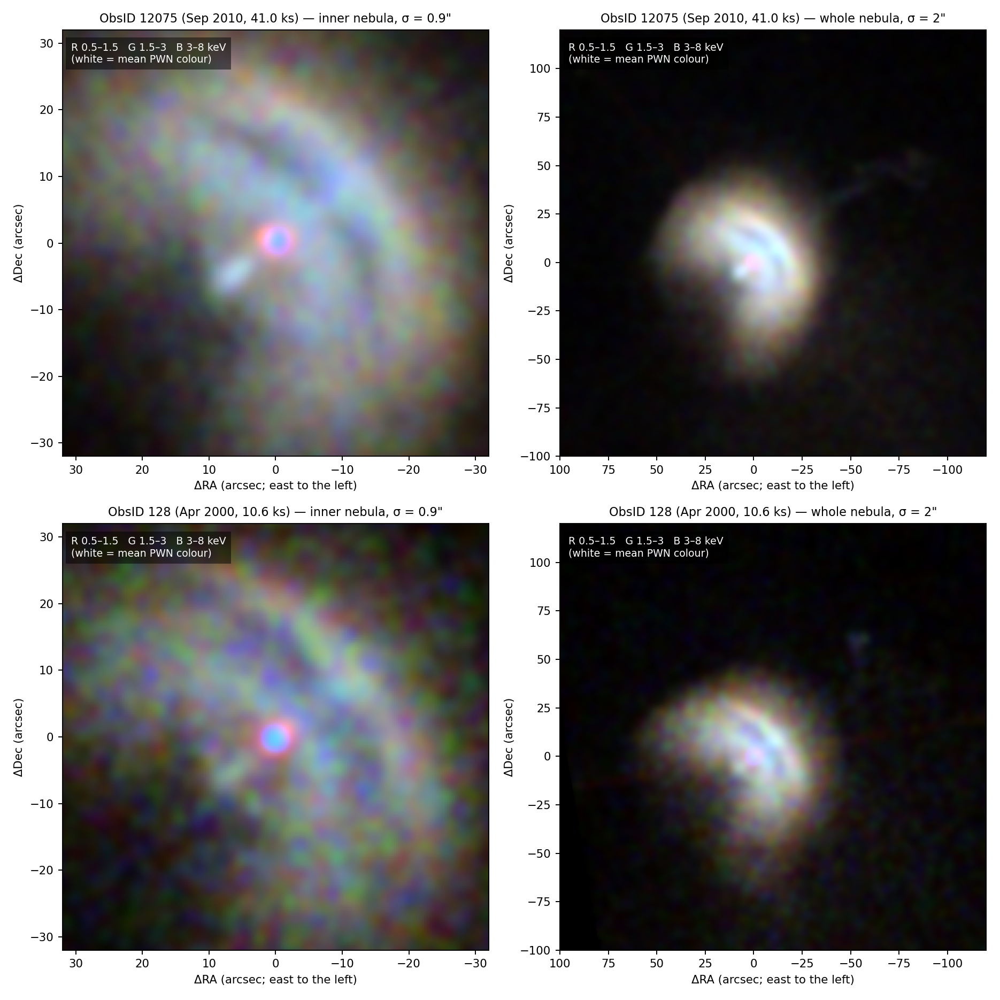
Figure 7. Colour-balanced three-colour images (red 0.5–1.5, green 1.5–3, blue 3–8 keV). White = the average PWN spectrum.
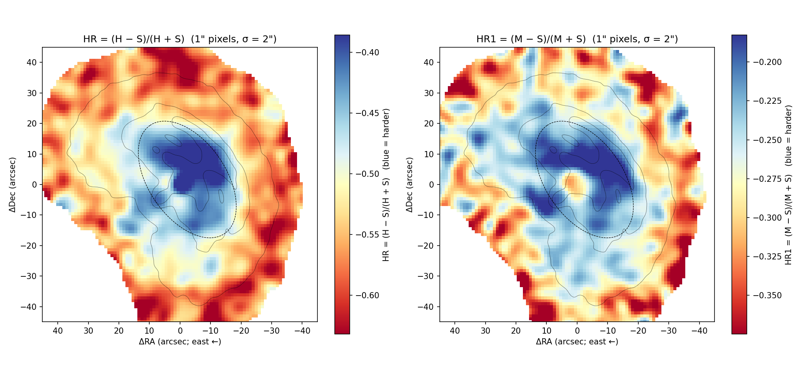
Figure 8. Hardness maps of ObsID 12075 (1″ pixels, 2″ Gaussian smoothing; pixels with fewer than 150 counts blank). Blue = harder. Dashed: fitted outer ring; contours: broad-band brightness.
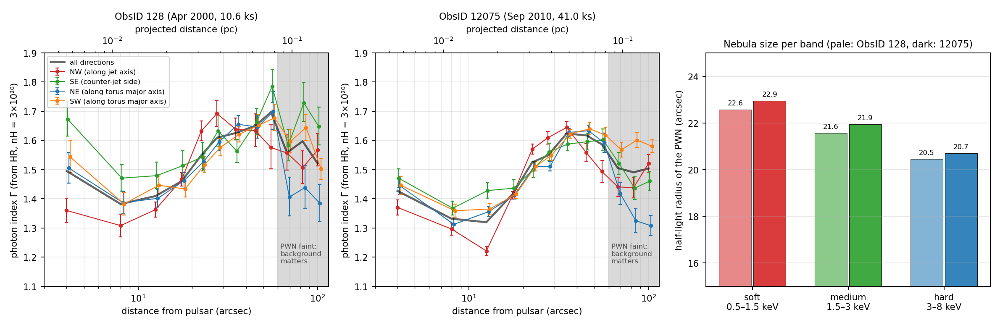
Figure 9. Photon index Γ (from HR) versus distance from the pulsar in four 90° sectors and for all directions (thick line), for both epochs; right: half-light radius of the nebula in each band. Beyond ≈ 60″ (grey) the nebula is faint and the instrumental and Vela-SNR background, which has a different spectrum, dominates the colours.
4.1 Colours of the individual structures
Region
HR 2000 / 2010
Γ 2000
Γ 2010
Pulsar halo, 1.5–3.5″ NW
-0.680 / -0.602
1.67±0.08
1.70±0.05
NW jet
-0.471 / -0.344
1.25±0.05
1.23±0.03
SE counter-jet
-0.643 / -0.417
1.58±0.05
1.35±0.03
Inner arc (ends)
-0.548 / -0.388
1.39±0.05
1.30±0.03
Outer arc
-0.603 / -0.453
1.49±0.02
1.41±0.01
Diffuse 3–15″
-0.558 / -0.417
1.40±0.01
1.35±0.01
Diffuse 15–30″
-0.625 / -0.507
1.54±0.01
1.51±0.01
Diffuse 30–45″
-0.671 / -0.568
1.64±0.01
1.63±0.01
Diffuse 45–60″
-0.678 / -0.548
1.66±0.02
1.59±0.01
Region
Γ net 2000c
Γ net 2010c
Γ surroundings 2000 / 2010
Pulsar halo, 1.5–3.5″ NW
1.56 +0.29/−0.22
2.19 +0.93/−0.43
1.72 / 1.60
NW jet
1.01 +0.25/−0.22
1.05 +0.16/−0.16
1.32 / 1.28
SE counter-jet
1.76 +0.29/−0.22
1.12 +0.07/−0.06
1.51 / 1.53
Inner arc (ends)
1.35 +0.17/−0.15
1.15 +0.16/−0.15
1.41 / 1.35
Outer arc
1.58 +0.09/−0.08
1.39 +0.05/−0.05
1.45 / 1.42
Table 5. Hardness ratios HR = (H − S)/(H + S) and photon indices. c 'Net' = after subtracting the nebula at the same distance from the pulsar, rotated by ±40° (the colour of the structure itself); last column = colour of that comparison region. The pulsar itself (r < 1.5″; ΓHR = 0.73 and 0.85) is not listed: its colours are distorted by pile-up and its spectrum is not a single power law (Sect. 5.4).
4.2 Answers to the Task D questions
Question
Answer from the colour images, maps and Table 5
Which regions are dominated by soft emission?
The outer, diffuse halo (r ≥ 25–30″, Γ ≈ 1.6–1.7), especially the extension to the S/SW, and the halo immediately around the pulsar (r ≈ 1–3″; HR ≈ −0.7 to −0.9), which is the pulsar's own soft (thermal) emission spread by the PSF plus the soft PSF artefact.
Which regions are dominated by hard emission?
Everything inside and on the torus (r ≤ 15″, Γ ≈ 1.32–1.42), the jets and the inner arc. The blue pulsar core in Fig. 7 is an artefact of pile-up (two soft photons recorded as one harder event).
Is the jet harder or softer than the surrounding PWN?
Harder. NW jet: net Γ = 1.01 +0.25/−0.22 (2000) and 1.05 ± 0.16 (2010) against Γ ≈ 1.3 around it. SE counter-jet in 2010: 1.12 +0.07/−0.06 against 1.53 (≈ 6σ). In the short 2000 exposure the counter-jet was not harder (1.76 +0.29/−0.22), consistent with the known variability of the jets.
Does the emission become softer with distance from the pulsar?
Yes, in all four directions and in both epochs: Γ rises from ≈ 1.38/1.33 at 6–10″ to ≈ 1.65/1.62 at 40–50″ (2000/2010), ΔΓ ≈ +0.3 over 0.05 pc; the hard nebula is ≈ 10% smaller. Both colours (HR1 and HR2) steepen by the same amount, which favours a steepening power law over an added soft thermal component.
Are the torus and jet structures different in their energy distribution?
Yes. The outer arc has the same spectrum as the nebula around it (net Γ = 1.39 vs 1.42 in 2010), the inner arc is slightly harder (net Γ ≈ 1.15–1.35), and the jets are the hardest structures (Γ ≈ 1.0–1.1), ≈ 0.3–0.4 harder than the torus.
Table 6. Task D questions.
Section 5
5. Physical Interpretation
5.1 Synchrotron nebula and cooling
The nebular spectrum is a hard power law (Γ ≈ 1.3–1.7), the signature of synchrotron emission from a power-law population of electrons and positrons, N(E) ∝ E−p with p = 2Γ − 1 ≈ 1.6 near the torus and ≈ 2.2 in the outer nebula. Synchrotron losses are fastest for the most energetic particles, tsyn ≈ 36 yr (B/100 µG)−3/2(E/1 keV)−1/2, so a population that flows away from the termination shock while radiating loses its hard-X-ray-emitting particles first: its spectrum steepens (towards ΔΓ = 0.5 for complete cooling) and the nebula looks smaller at high energy. This is exactly what we see: ΔΓ ≈ +0.3 between 10″ and 40″ and a hard half-light radius 10% smaller than the soft one. That ΔΓ is less than 0.5 means the cooling is partial on these scales.
The time scales are consistent with this picture. Pressure balance at the torus, B²/8π ≈ Ė/(4πcR²) with Ė = 6.9×1036 erg s−1 and R = 21″, gives B ≈ 235 µG, for which electrons radiating at 5 keV (1 keV) live tsyn ≈ 4 yr (10 yr). A relativistic post-shock flow (≈ c/3) would carry them far beyond 0.06 pc in that time, but in the standard model of Kennel & Coroniti (1984) the flow decelerates (v ∝ r−2); starting at c/3 at the inner arc (r ≈ 9″) it takes ≈ 4 yr to reach 40″, equal to the 5-keV cooling time for B ≈ 264 µG — the same order as the pressure-balance field. The observed softening therefore implies a few-hundred-µG field and a strongly decelerating outflow inside the bright PWN.
5.2 Jets and arcs
The jets are the hardest structures (Γ ≈ 1.0–1.1, p ≈ 1.0–1.2): they carry freshly accelerated particles along the spin axis from very close to the pulsar and are seen before the particles have cooled, so their spectrum is close to the injection spectrum. The inner arc, closest to the termination shock, is also slightly harder than its surroundings, while the outer arc (the downstream equatorial flow) has the same spectrum as the diffuse nebula. The torus and jets therefore trace two different outflows — an equatorial wind and polar jets — with different particle histories. Their alignment with the proper motion (axis PA ≈ 305–309° vs 301°) supports spin–kick alignment.
5.3 Relativistic Doppler boosting
Only the NW (front) half of the torus is seen: along the fitted ring, the back half is not detected above the local nebula (Fig. 10). For an equatorial outflow of speed βc the front/back brightness ratio is [(1 + β sin i)/(1 − β sin i)]Γ+1. The 2σ lower limits on the ratio, > 6 (2000) and > 14 (2010), give β ≥ 0.38 and β ≥ 0.62 (0.56 for i = 63.6°): the post-shock flow is mildly relativistic, in line with the 0.3–0.7c motions of blobs in the arcs and jets measured with Chandra (Pavlov et al. 2001b, 2003). Doppler boosting, not intrinsic emission, explains why the nebula is so much brighter on its NW side.
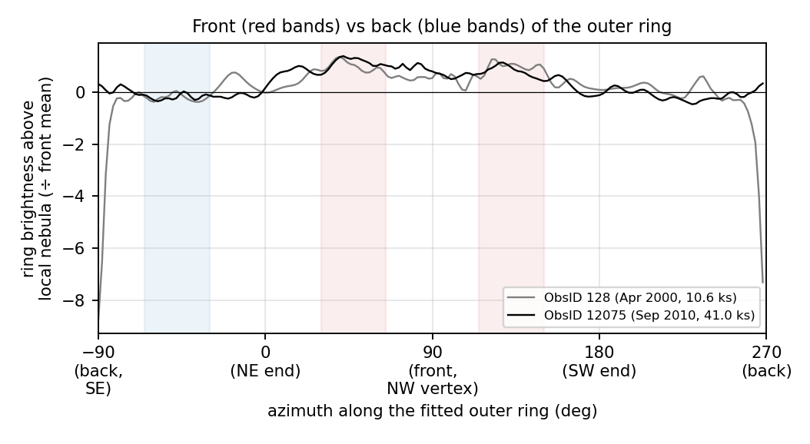
Figure 10. Brightness of the outer ring above the local nebula along the fitted ring, normalised to the mean of the front segments (red bands). The back segments (blue bands) are consistent with zero.
5.4 The pulsar and the energetics
The pulsar's core looks hard (HR ≈ −0.1, 'blue') only because of pile-up; outside the piled core (1–2.5″) its PSF halo is the softest emission in the field (HR ≈ −0.8 in all directions). Since the wings of Chandra's PSF are, if anything, harder than its core, the pulsar is intrinsically softer than the nebula, consistent with the thermal (≈ 0.7 MK) atmosphere plus weak power law of Pavlov et al. (2001); its colours do not fit a single power law (Γ from HR1 and HR2 differ strongly), so no photon index is quoted for it. For the nebula (r = 2.5–100″, outer level subtracted) the unabsorbed 0.5–8 keV flux is 7.16×10−11 (2000) and 7.31×10−11 erg cm−2 s−1 (2010), i.e. LX ≈ 7.2×1032 erg s−1 at 287 pc and LX/Ė ≈ 1.0×10−4. The 2% agreement between two epochs with very different detector responses is a good check of the whole reduction. Vela converts only ~10−4 of its spin-down power into nebular X-rays.
Section 6
6. Our Pre-Project Expectations, Tested
Expectation (pre-project report, Sect. 3.4)
Result
Soft band dominated by the thermally bright pulsar plus diffuse nebula
Partly. The diffuse nebula dominates; the pulsar is surrounded by a very soft halo, but its ≈ 60 eV thermal emission peaks below 0.5 keV, so in 0.5–1.5 keV it does not outshine the nebula.
Medium band shows the arcs and jets most clearly
Confirmed (Figs. 4–5).
Hard band: a more compact nebula on the inner arc and jets, with fewer counts
Confirmed: half-light radius 10% smaller (> 12σ); 71 471 hard vs 210 332 soft counts in ObsID 12075.
Pulsar 'red', jets and inner torus 'blue'
Confirmed for the jets and inner torus; the unpiled pulsar halo is red, the piled core appears blue.
Outer diffuse emission redder than the inner structures if cooling matters
Confirmed: ΔΓ ≈ +0.3 between 10″ and 40″; cooling is partial, as anticipated.
Pile-up may affect the pulsar core
Confirmed and quantified (≈ 5–10%); the core is excluded from the nebular analysis.
Table 7. Hypotheses from the pre-project report compared with the results.
Section 7
7. Limitations and Checks
• No full spectral fitting. Photon indices come from band ratios with nH fixed and one response (at the pulsar) for the whole nebula; within 1′ of the pulsar the effective area changes by only a few per cent. A ±50% change of nH shifts Γ by ≈ ±0.03, equally in every region, so it does not affect the trends we report. The agreement of Γ between 2000 and 2010, after the large change in the soft response, shows the method is robust.
• Background. The whole field is filled by the nebula and the Vela SNR, so there is no source-free background; the outer level (90–120″) contains instrumental, SNR and faint PWN emission. The colour trend is measured where the PWN is ≥ 4× brighter than that level.
• Ring fits. Only the front half of each ring is visible, so b and the centre offset are correlated; the inclination is therefore less certain than the radius.
• Variability. The jets, outer jet and knots change on weeks–months; sizes of these features refer to the epoch of each observation.
• Instrumental features (pile-up, readout streak, PSF artefact) were identified and excluded rather than modelled.
Section 8
8. Conclusions
(1) Reprocessing ObsID 128 (and the deep ObsID 12075) gives clean images in which the pulsar, an inner and an outer arc, a jet and counter-jet, the diffuse nebula and the outer jet are all identified. (2) The outer arc is the front of a torus of radius 21″ = 0.030 pc inclined by ≈ 55–67° about an axis at PA ≈ 305–309°; the inner arc has a radius ≈ 9″ (0.012 pc); the jets are ≈ 13″ (0.018 pc) long and ≈ 2.5″ wide; the bright nebula is ≈ 2′ (0.17 pc) across with a half-light radius of 23″ (0.032 pc); the outer jet extends to 0.14 pc. (3) With increasing photon energy the nebula becomes more compact and its emission concentrates on the torus and jets. (4) The jets are the hardest structures, the torus has the colour of its surroundings, and the emission softens with distance from the pulsar. (5) These facts describe a synchrotron nebula fed by a mildly relativistic (β ≥ 0.4–0.6), decelerating equatorial wind and polar jets, in which particles accelerated at the termination shock cool in a ~2–3×10−4 G field as they flow outward.
Back matter
References
Dodson, R. et al. 2003, ApJ, 596, 1137 — Vela pulsar parallax and proper motion from VLBI.
Gaensler, B. M. & Slane, P. O. 2006, ARA&A, 44, 17 — Evolution and structure of pulsar wind nebulae.
Helfand, D. J., Gotthelf, E. V. & Halpern, J. P. 2001, ApJ, 556, 380 — Vela pulsar and its synchrotron nebula.
Kargaltsev, O. & Pavlov, G. G. 2008, AIP Conf. Proc., 983, 171 — Pulsar wind nebulae in the Chandra era.
Kennel, C. F. & Coroniti, F. V. 1984, ApJ, 283, 694 — Confinement of the Crab pulsar's wind by its supernova remnant.
Morrison, R. & McCammon, D. 1983, ApJ, 270, 119 — Interstellar photoelectric absorption cross sections.
Ng, C.-Y. & Romani, R. W. 2004, ApJ, 601, 479; 2008, ApJ, 673, 411 — Fitting pulsar wind tori I, II.
Pavlov, G. G. et al. 2001, ApJ, 552, L129 — The X-ray spectrum of the Vela pulsar resolved with Chandra (reference paper).
Pavlov, G. G. et al. 2001b, ApJ, 554, L189 — Variability of the Vela PWN; Pavlov, G. G. et al. 2003, ApJ, 591, 1157 — The variable jet of the Vela pulsar.
Fruscione, A. et al. 2006, Proc. SPIE, 6270, 62701V — CIAO: Chandra's data analysis system; Chandra X-ray Center, CIAO threads (cxc.harvard.edu/ciao).
Appendix
Appendix A. Reproducing the Analysis
All products are in the project folder Vela_Project7/. With the ciao-4.18 conda environment, run from that folder:
Script
Purpose
scripts/setup_ciao.sh
Activate CIAO and point CALDB at the partial calibration database
scripts/01_reprocess.sh <obsid>
CALDB download, chandra_repro, flare screening → products/<obsid>/evt2_clean.fits (Task A)
scripts/02_images.sh <obsid>
Band counts images, exposure maps and fluxed images (Tasks A, C)
scripts/03_measure.py <obsid>
Ring fits, jet lengths and widths, nebula extent → measurements.json (Task B)